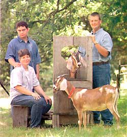
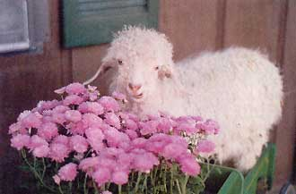

Each year on Oct. 10, we have an evening of celebration at Harvest Moon Farm. It is our Independence Day, a personal version of Thanksgiving: On this night we commemorate the day we moved back to the land.
Moving to the country was a dream for many years for my husband Mark and me. We wanted to be out so badly we could taste it. We both were working in town at the time and had read lots of books and magazines pertaining to the country way of life. We were living in an apartment on the busiest street in Hannibal, Mo., with traffic and sirens all hours of the day and night. The first few nights we were finally in the country, our ears rang with the silence. Bullfrogs and whippoorwills lulled us to sleep at night, a welcome change.
Mark and I drove the back roads for weeks looking for a place for sale or one that looked vacant and might meet our needs. We contacted some people we knew about a place that looked abandoned near their property. They said it was a weekend house and not for sale. About a week later they called us back and said it had slipped their minds that there was another place with a small acreage just up the road. They wanted people who could take care of the place and fix it up to move in. We took one look through the windows and called to make an offer.
And here we are. I thank the good Lord every day for helping us find this place and allowing us to live here. We try not to take our good fortune for granted, and our annual celebration is just one of our ways of giving thanks. We don't serve store-bought vittles on this day - no, sir. We sit down to a wonderful presentation of foods from our place. A bountiful array, each year more varied than the last. Some years we share this meal with special friends and family. Other years it's just a private evening for Mark, our son, Jamie Bush, and me. Either way, it is now tradition.
Our menu from a year ago, the end of our sixth on the land, provides a window on our lives. Dinner began with morel mushrooms from our woods, a supreme delicacy. We flour and fry them in oil so they're crispy and simply melt in your mouth. I don't know if it's because they are a rare treat or because they are harbingers of spring, but there is nothing to compare with the taste of a morel right out of the frying pan. We forage them on our place and always dry a few to eat later in the year. We feel as though we're cheating Mother Nature when the snow is flying and we're eating steak and 'shrooms.
The main course was venison filets with wild elderberry jelly. Mark has always hunted and we never let the meat go to waste, but it was never an essential in our town life. When I left my job in town, we had to learn to live on less. So when we formulated a budget, we saw we had to reduce the amount we spent on groceries and dining out. Game is a staple in our pantry now, and it's comforting to go into the winter with a freezer full of meat we butchered ourselves.
The menu included a salad with 'Butter Crunch' and leaf lettuce that was still producing in our cold frame, as well as Swiss chard, spinach and ever-plentiful dandelion greens. With the cold frame we can start greens early and keep them going until October. We plant lettuce in February and late August.
Our vegetables that evening were homegrown green beans and corn, with side dishes of applesauce, zucchini pickles and a French goat cheese we made ourselves, courtesy of our two Nubians, which keep us in more milk than we can use. I make several varieties of cheese now, but in the beginning it was definitely a trial-and-error process, resulting in some really nasty stuff. Those first few tries, I'd wait until Mark got home from work, and we would taste it together. Sometimes it felt more like punishment than food. As it turns out, our first goat had milk that tasted goaty no matter what we did, so we assumed all goat's milk tasted that way. When we purchased another goat, we were pleasantly surprised by rich, creamy milk, almost indistinguishable from cow's milk. Our son has never converted to goat's milk, but he has enjoyed many a dish of macaroni and goat's cheese ... unbeknownst to him. When his friends come over they always ask, "is there any goat's milk in this stuff?" Cowards.
Homemade bread completed our harvest meal, followed by goat's milk ice cream with peach cobbler. The only store-bought ingredients were flour, sugar, oil and vinegar. Of course, we all ate too much, but the knowledge that 99 percent of what we consumed came from our land was more filling than any gourmet meal could ever expect to be.
In a world where traditions are few, and change is constant, this celebration will stand for many years to come. Too often we dream, contrive, plead and beg to get to a certain place in our lives. After we get there, we quickly forget about that struggle and slip into the complacency that comes with everyday life. Sometimes we have one of those days: The goat finds a hole in the fence and escapes to eat all the sunflowers; in winter's bitter cold, we remember how easy it was to turn a thermostat and have heat, instead of cutting wood, hauling it in and hauling ashes out.
Still, we feel privileged and chosen, singled out to lead this life, to live in this place with the people we love most. This was a dream we shared, and even though our son thought we were a little bit weird, I know he's proud of the life we've carved out for ourselves. From our house we have run a small business, raised an ark of animals, grown food and home-schooled. Jamie is 18 now, about to leave the nest. I hope and believe the values he learned here at Harvest Moon Farm will follow him the rest of his life.
This year has been one of change for us. We had the opportunity to sell our first farm and buy another one for cash, fulfilling our long-term goal of being debt free. We're still living in the same area, remodeling a farm house built in 1880, doing all the same things this time with experience and some wisdom.
So this season, our seventh, we raise a glass, congratulate ourselves on what went right, lament a bit over what went wrong and plan for Year Eight. We know we will make it, here with each other, here on our land.
|
 PHOTO: HAL SMITH Janet Knickerbocker, her son, Jamie Bush, and husband Mark Knickerbocker show their two Nubians goats an antique milking stanchion. |
 JANET KNICKERBOCKER Rosebud, the angora goat, appears quite pleased to be sneaking a colorful snack. |
|